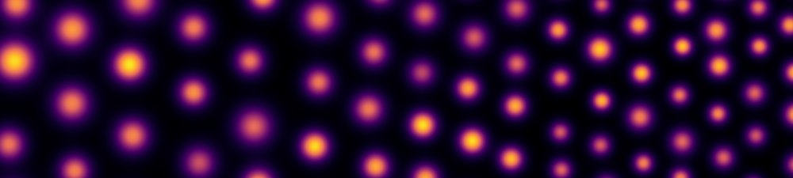

Roll formation in a bio-active fluid
How a suspension of swimming micro-organisms self-organises into convective rolls, modelled as a bio-active fluid. See Bioconvection.
Givaudan M., Picella F., de Maleprade H., Comptes Rendus. Physique (2026). doi